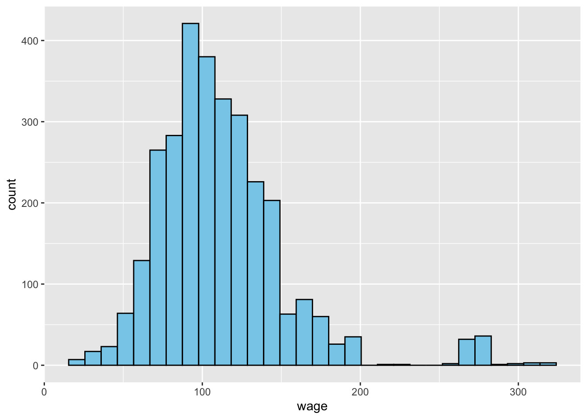
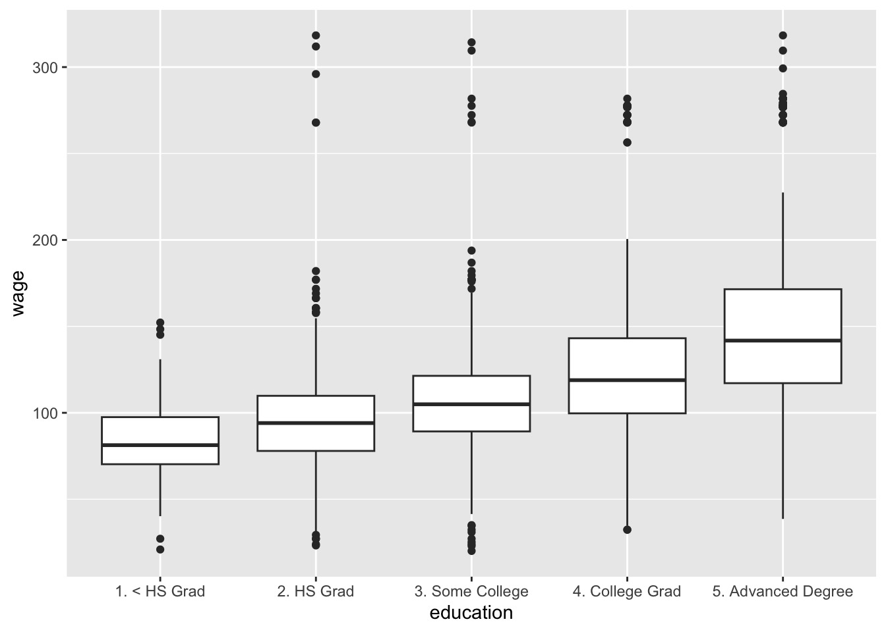
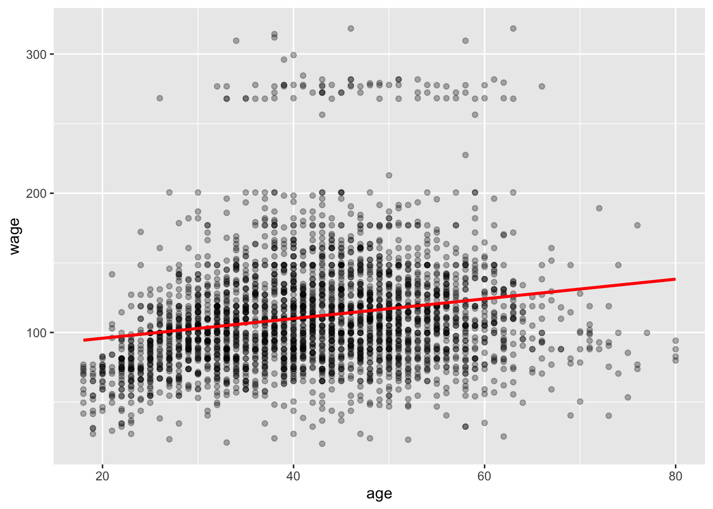
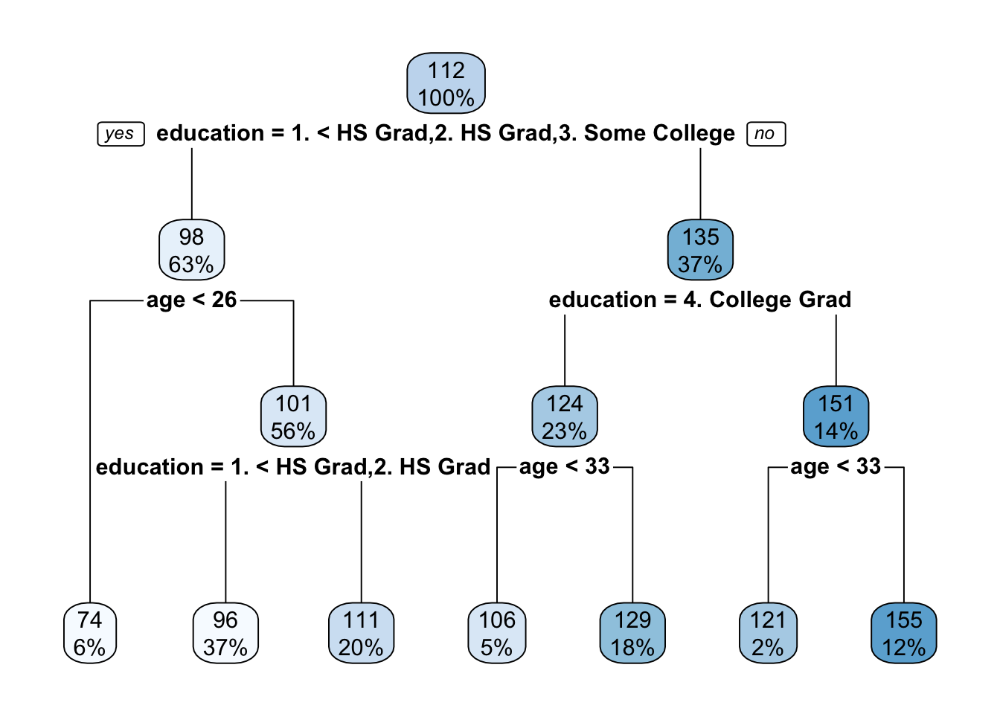

The goal of this project was to explore how education level, age influence wage outcomes. I built both a regression model (to predict exact wages) and a classification model (to predict whether someone earns a high wage) using decision trees.
#install.packages("ISLR")
#install.packages("rpart")
#install.packages("rpart.plot")
library(ISLR)
library(tidyverse)## ── Attaching core tidyverse packages ──────────────────────── tidyverse 2.0.0 ──
## ✔ dplyr 1.1.4 ✔ readr 2.1.5
## ✔ forcats 1.0.0 ✔ stringr 1.5.1
## ✔ ggplot2 3.5.1 ✔ tibble 3.2.1
## ✔ lubridate 1.9.4 ✔ tidyr 1.3.1
## ✔ purrr 1.0.4
## ── Conflicts ────────────────────────────────────────── tidyverse_conflicts() ──
## ✖ dplyr::filter() masks stats::filter()
## ✖ dplyr::lag() masks stats::lag()
## ℹ Use the conflicted package (<http://conflicted.r-lib.org/>) to force all conflicts to become errorslibrary(rpart)
library(rpart.plot)
data(Wage)
glimpse(Wage)## Rows: 3,000
## Columns: 11
## $ year <int> 2006, 2004, 2003, 2003, 2005, 2008, 2009, 2008, 2006, 2004,…
## $ age <int> 18, 24, 45, 43, 50, 54, 44, 30, 41, 52, 45, 34, 35, 39, 54,…
## $ maritl <fct> 1. Never Married, 1. Never Married, 2. Married, 2. Married,…
## $ race <fct> 1. White, 1. White, 1. White, 3. Asian, 1. White, 1. White,…
## $ education <fct> 1. < HS Grad, 4. College Grad, 3. Some College, 4. College …
## $ region <fct> 2. Middle Atlantic, 2. Middle Atlantic, 2. Middle Atlantic,…
## $ jobclass <fct> 1. Industrial, 2. Information, 1. Industrial, 2. Informatio…
## $ health <fct> 1. <=Good, 2. >=Very Good, 1. <=Good, 2. >=Very Good, 1. <=…
## $ health_ins <fct> 2. No, 2. No, 1. Yes, 1. Yes, 1. Yes, 1. Yes, 1. Yes, 1. Ye…
## $ logwage <dbl> 4.318063, 4.255273, 4.875061, 5.041393, 4.318063, 4.845098,…
## $ wage <dbl> 75.04315, 70.47602, 130.98218, 154.68529, 75.04315, 127.115…ggplot(Wage, aes(x = wage)) + geom_histogram(bins = 30, fill = "skyblue", color = "black")
# Boxplot: wage by education
ggplot(Wage, aes(x = education, y = wage)) + geom_boxplot()
# Age vs. wage
ggplot(Wage, aes(x = age, y = wage)) +
geom_point(alpha = 0.3) +
geom_smooth(method = "lm", se = FALSE, color = "red")## `geom_smooth()` using formula = 'y ~ x'
model1 <- lm(wage ~ age + education + jobclass, data = Wage)
summary(model1)##
## Call:
## lm(formula = wage ~ age + education + jobclass, data = Wage)
##
## Residuals:
## Min 1Q Median 3Q Max
## -106.656 -20.043 -3.488 14.908 217.504
##
## Coefficients:
## Estimate Std. Error t value Pr(>|t|)
## (Intercept) 59.58000 3.24874 18.339 < 2e-16 ***
## age 0.55537 0.05725 9.701 < 2e-16 ***
## education2. HS Grad 11.20088 2.47733 4.521 6.38e-06 ***
## education3. Some College 23.33036 2.61811 8.911 < 2e-16 ***
## education4. College Grad 38.38622 2.62045 14.649 < 2e-16 ***
## education5. Advanced Degree 62.91152 2.87492 21.883 < 2e-16 ***
## jobclass2. Information 4.51067 1.38091 3.266 0.0011 **
## ---
## Signif. codes: 0 '***' 0.001 '**' 0.01 '*' 0.05 '.' 0.1 ' ' 1
##
## Residual standard error: 35.89 on 2993 degrees of freedom
## Multiple R-squared: 0.2619, Adjusted R-squared: 0.2605
## F-statistic: 177 on 6 and 2993 DF, p-value: < 2.2e-16# For each one-year increase in age, wage increases by $0.56, holding education and jobclass constant.
# Compared to the baseline group ("<HS Grad"):High school grads earn $11.20 more; Some college grads earn $23.33 more; College grads earn $38.39 more; Advanced degree holders earn $62.91 more.
model_poly <- lm(wage ~ poly(age, 2) + education + jobclass, data = Wage)
summary(model_poly)##
## Call:
## lm(formula = wage ~ poly(age, 2) + education + jobclass, data = Wage)
##
## Residuals:
## Min 1Q Median 3Q Max
## -111.069 -19.741 -3.182 14.913 211.799
##
## Coefficients:
## Estimate Std. Error t value Pr(>|t|)
## (Intercept) 84.303 2.191 38.476 < 2e-16 ***
## poly(age, 2)1 354.229 35.522 9.972 < 2e-16 ***
## poly(age, 2)2 -378.226 35.396 -10.685 < 2e-16 ***
## education2. HS Grad 10.574 2.432 4.347 1.43e-05 ***
## education3. Some College 22.425 2.571 8.721 < 2e-16 ***
## education4. College Grad 36.682 2.577 14.233 < 2e-16 ***
## education5. Advanced Degree 60.767 2.829 21.479 < 2e-16 ***
## jobclass2. Information 4.357 1.356 3.214 0.00132 **
## ---
## Signif. codes: 0 '***' 0.001 '**' 0.01 '*' 0.05 '.' 0.1 ' ' 1
##
## Residual standard error: 35.23 on 2992 degrees of freedom
## Multiple R-squared: 0.2891, Adjusted R-squared: 0.2874
## F-statistic: 173.8 on 7 and 2992 DF, p-value: < 2.2e-16# Wage increases with age up to a point, then flattens or declines slightly. This model explains 28.9% of the wage variability, a slight improvement over the linear model.
# overall, People with more education earn significantly more. Information jobs pay more than manual jobs. Wage increases with age, but it likely peaks and then levels off.tree_model <- rpart(wage ~ age + education + jobclass, data = Wage, method = "anova")
rpart.plot(tree_model)
Wage$high_wage <- ifelse(Wage$wage > 250, "yes", "no")
Wage$high_wage <- as.factor(Wage$high_wage)
tree_class <- rpart(high_wage ~ age + education + jobclass, data = Wage, method = "class")
rpart.plot(tree_class)# People who are college grads, over 33, tend to earn about $155k, while those with lower education and under 26 earn closer to $74k–$111k on average.
# People with less than a college degree and age < 30 is most likely not high earners. People with college degrees or advanced degrees, age > 35,has the higher likelihood of being high earners.